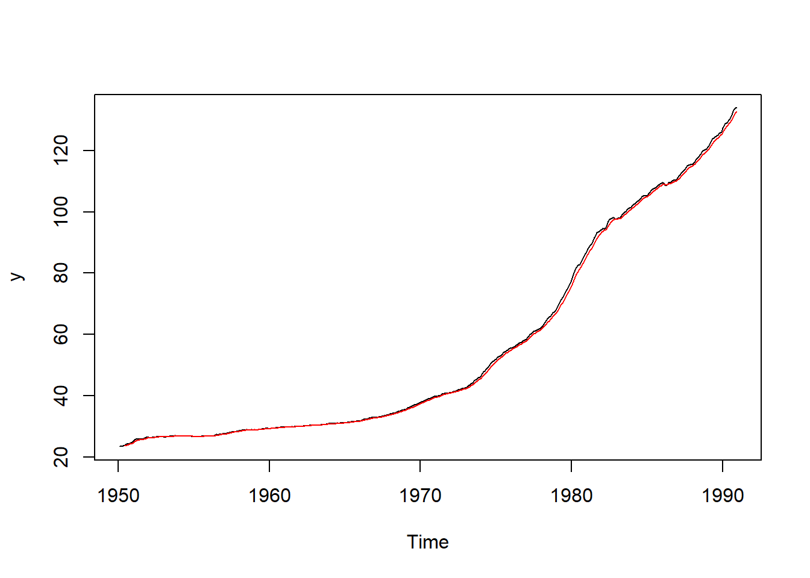
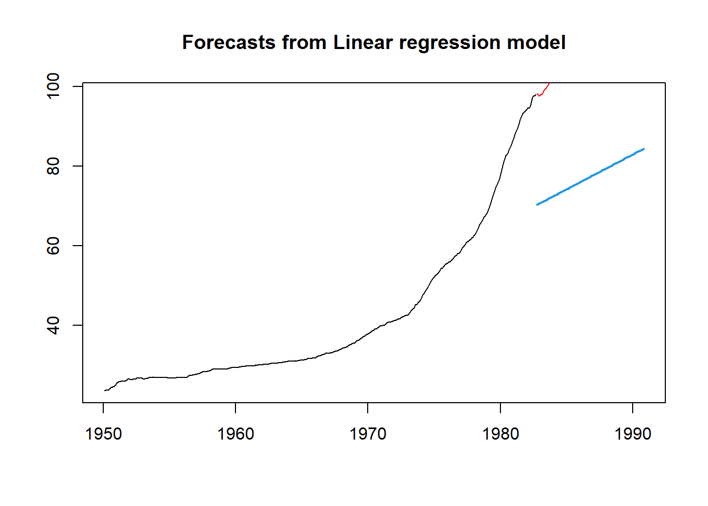

library(TTR)
library(forecast)
df <- read.csv("data/inflation.csv")
# This series start from 1950-2 to 1990-12
y <- ts(df$cpi, start = c(1950, 2), end = c(1990, 12), freq = 12)
plot(y)Time Series Project
This is sample codes for the time series project. This dataset contains monthly observations in the US from 1950-2 to 1990-12. The dataset can be download at the link below.
1. Data Exploration
Import the series. Note: Make sure you specify the correct starting time and frequency for the series.
Plot the time series.
1.1 Smoothing
- Moving Average
plot(y)
# create a moving average series
k = 16 # set the moving average
y_sma = SMA(y, n = k)
# plot the moving average series
lines(y_sma, col = "red")- Exponential Smoothing
plot(y)
# create a moving average series
w = .7
y_ema = EMA(y, ratio = 1-w)
# plot the moving average series
lines(y_ema, col = "red")
1.2 Auto-correltion
- ACF
acf(y)2. Modelling
2.1 Model Training
Split the original series into the training series and the testing series
Train all the models
# data partition
# set the proportion of the test set
p = .2
nValid <- round(.2*length(y))
nTrain <- length(y) - nValid
train.ts <- window(y, start = c(1950, 2), end = c(1950, nTrain))
valid.ts <- window(y, start = c(1950, nTrain + 1), end = c(1950, nTrain + nValid))
# Modeling
# baseline models
# average method: forecast by the average of the training series
model1 = meanf(train.ts, h = nValid, level = 0)
# naive: forecast by the last observation of the series
model2 = naive(train.ts, h = nValid, level = 0)
# seasonal naive: forecast by the last season
model3 = snaive(train.ts, h = nValid, level = 0)
# drift: drawing the line from the first to the last observation
model4 = rwf(train.ts, h = nValid, level = 0, drift = TRUE)
# Exponential Models
model5 = ses(train.ts, h = nValid, level = 0)
model6 = holt(train.ts, damped = TRUE, h = nValid, level = 0)
model7 = hw(train.ts, seasonal="additive", damped = TRUE, h = nValid, level = 0)
model8 = hw(train.ts, seasonal="multiplicative", damped = TRUE, h = nValid, level = 0)
# Regression models
model9 = tslm(train.ts ~ trend, damped = TRUE, h = nValid, level = 0)
model10 = tslm(train.ts ~ trend + season, damped = TRUE, h = nValid, level = 0)2.2 Residual Analysis
Report the residuals analysis of all the models.
checkresiduals(model1)
Ljung-Box test
data: Residuals from Mean
Q* = 6980.4, df = 24, p-value < 2.2e-16
Model df: 0. Total lags used: 24checkresiduals(model2)
Ljung-Box test
data: Residuals from Naive method
Q* = 3981, df = 24, p-value < 2.2e-16
Model df: 0. Total lags used: 24checkresiduals(model3)
Ljung-Box test
data: Residuals from Seasonal naive method
Q* = 6703.3, df = 24, p-value < 2.2e-16
Model df: 0. Total lags used: 24checkresiduals(model4)
Ljung-Box test
data: Residuals from Random walk with drift
Q* = 3981, df = 24, p-value < 2.2e-16
Model df: 0. Total lags used: 24checkresiduals(model5)
Ljung-Box test
data: Residuals from Simple exponential smoothing
Q* = 3984.8, df = 24, p-value < 2.2e-16
Model df: 0. Total lags used: 24checkresiduals(model6)
Ljung-Box test
data: Residuals from Damped Holt's method
Q* = 85.241, df = 24, p-value = 8.712e-09
Model df: 0. Total lags used: 24checkresiduals(model7)
Ljung-Box test
data: Residuals from Damped Holt-Winters' additive method
Q* = 139.8, df = 24, p-value < 2.2e-16
Model df: 0. Total lags used: 24checkresiduals(model8)
Ljung-Box test
data: Residuals from Damped Holt-Winters' multiplicative method
Q* = 228.38, df = 24, p-value < 2.2e-16
Model df: 0. Total lags used: 24checkresiduals(model9)
Breusch-Godfrey test for serial correlation of order up to 24
data: Residuals from Linear regression model
LM test = 390.64, df = 24, p-value < 2.2e-16checkresiduals(model10)
Breusch-Godfrey test for serial correlation of order up to 24
data: Residuals from Linear regression model
LM test = 390.61, df = 24, p-value < 2.2e-162.3 Testing Accuracy
- Calculate the forecast of all the models on the validation period. Calculate the Mean absolute percentage error (MAPE) of all the models. Plot the forecast of all models.
# forecasting
forecast1 = forecast(model1, h = nValid, level = 0)
forecast2 = forecast(model2, h = nValid, level = 0)
forecast3 = forecast(model3, h = nValid, level = 0)
forecast4 = forecast(model4, h = nValid, level = 0)
forecast5 = forecast(model5, h = nValid, level = 0)
forecast6 = forecast(model6, h = nValid, level = 0)
forecast7 = forecast(model7, h = nValid, level = 0)
forecast8 = forecast(model8, h = nValid, level = 0)
forecast9 = forecast(model9, h = nValid, level = 0)
forecast10 = forecast(model10, h = nValid, level = 0)
# plotting forecast
plot(forecast1)
lines(valid.ts, col = 'red')plot(forecast2)
lines(valid.ts, col = 'red')plot(forecast3)
lines(valid.ts, col = 'red')plot(forecast4)
lines(valid.ts, col = 'red')plot(forecast5)
lines(valid.ts, col = 'red')plot(forecast6)
lines(valid.ts, col = 'red')plot(forecast7)
lines(valid.ts, col = 'red')plot(forecast8)
lines(valid.ts, col = 'red')plot(forecast9)
lines(valid.ts, col = 'red')
plot(forecast10)
lines(valid.ts, col = 'red')# accuracy
a1 = accuracy(forecast1$mean, valid.ts)
a2 = accuracy(forecast2$mean, valid.ts)
a3 = accuracy(forecast3$mean, valid.ts)
a4 = accuracy(forecast4$mean, valid.ts)
a5 = accuracy(forecast5$mean, valid.ts)
a6 = accuracy(forecast6$mean, valid.ts)
a7 = accuracy(forecast7$mean, valid.ts)
a8 = accuracy(forecast8$mean, valid.ts)
a9 = accuracy(forecast9$mean, valid.ts)
a10 = accuracy(forecast10$mean, valid.ts)
rbind(a1, a2, a3,a4, a5, a6, a7, a8, a9, a10) ME RMSE MAE MPE MAPE ACF1 Theil's U
Test set 71.149745 71.835582 71.149745 62.844221 62.844221 0.9648050 156.75147
Test set 14.814286 17.819308 14.822449 12.484278 12.492638 0.9648050 36.49833
Test set 17.311224 19.948559 17.311224 14.726102 14.726102 0.9540468 41.18541
Test set 5.395360 7.128432 5.498878 4.476466 4.582081 0.9577603 14.33309
Test set 14.814306 17.819325 14.822468 12.484296 12.492655 0.9648050 36.49837
Test set 4.236667 7.342054 4.794555 3.355612 3.911874 0.9605489 14.49693
Test set 3.171784 6.476829 4.208807 2.436747 3.447603 0.9593020 12.76458
Test set 3.613237 6.766718 4.340933 2.823826 3.539629 0.9594320 13.33558
Test set 35.431263 35.912989 35.431263 31.230108 31.230108 0.9607042 78.02738
Test set 35.448351 35.928090 35.448351 31.247084 31.247084 0.9586357 78.058213. Forecasting
Based on the model evaluation above, decide the best model. Retrain the best model on the entire series. Use the retrained model to forecast the next values. Plot the series and the forecast values.
# model7 gives the lowest MAPE,
# so we will select this model as the final model
# to train it on the entire dataset to make forecasting.
selected_model = hw(y, seasonal="additive", damped = TRUE, h = nValid)
new_forecast = forecast(selected_model)
plot(new_forecast)